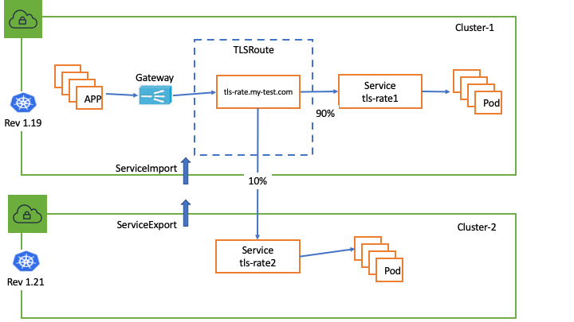

TLS Passthrough Support¶
Kubernetes Gateway API lays out the general guidelines on how to configure TLS passthrough. Here are examples on how to use them against AWS Gateway Api controller and VPC Lattice.
Install Gateway API TLSRoute CRD¶
The TLSRoute CRD is already included in the helm chart and deployment.yaml, if you are using these 2 methods to install the controller no extra steps needed. If you want to install the TLSRoute CRD manually by yourself:
# Install CRD
kubectl apply -f config/crds/bases/gateway.networking.k8s.io_tlsroutes.yaml
# Verfiy TLSRoute CRD
kubectl get crd tlsroutes.gateway.networking.k8s.io
NAME CREATED AT
tlsroutes.gateway.networking.k8s.io 2024-03-07T23:16:22Z
Setup TLS Passthrough Connectivity in a single cluster¶
1. Configure TLS Passthrough Listener on Gateway¶
# tls listener config snips:
apiVersion: gateway.networking.k8s.io/v1
kind: Gateway
metadata:
name: my-hotel-tls-passthrough
spec:
gatewayClassName: amazon-vpc-lattice
listeners:
...
- name: tls
protocol: TLS
port: 443
tls:
mode: Passthrough
...
2. Configure TLSRoute¶
# Suppose in the below example, we use the "parking" service as the client pod to test the TLS passthrough traffic.
kubectl apply -f files/examples/parking.yaml
# Configure nginx backend service (This nginx image includes a self-signed certificate)
kubectl apply -f files/example/nginx-server-tls-passthrough.yaml
# configure nginx tls route
kubectl apply -f files/examples/tlsroute-nginx.yaml
3. Verify the controller has reconciled nginx-tls route¶
Make sure the TLSRoute has the application-networking.k8s.aws/lattice-assigned-domain-name annotation and status Accepted: True
kubectl get tlsroute nginx-tls -o yaml
apiVersion: gateway.networking.k8s.io/v1alpha2
kind: TLSRoute
metadata:
annotations:
application-networking.k8s.aws/lattice-assigned-domain-name: nginx-tls-default-0af995120af2711bc.7d67968.vpc-lattice-svcs.us-west-2.on.aws
...
name: nginx-tls
namespace: default
...
status:
parents:
- conditions:
- lastTransitionTime: .....
message: ""
observedGeneration: 1
reason: Accepted
status: "True"
type: Accepted
- lastTransitionTime: .....
message: ""
observedGeneration: 1
reason: ResolvedRefs
status: "True"
type: ResolvedRefs
controllerName: application-networking.k8s.aws/gateway-api-controller
4. Verify TLS Passthrough Traffic¶
kubectl get deployment nginx-tls
NAME READY UP-TO-DATE AVAILABLE AGE
nginx-tls 2/2 2 2 1d
# Use the specified TLSRoute hostname to send traffic to the beackend nginx service
kubectl exec deployments/parking -- curl -kv https://nginx-test.my-test.com --resolve nginx-test.my-test.com:443:169.254.171.0
* Trying 169.254.171.0:443...
* Connected to nginx-test.my-test.com (169.254.171.0) port 443 (#0)
....
* TLSv1.2 (OUT), TLS header, Certificate Status (22):
* TLSv1.2 (OUT), TLS handshake, Client hello (1):
* TLSv1.2 (IN), TLS handshake, Server hello (2):
* TLSv1.2 (IN), TLS handshake, Certificate (11):
* TLSv1.2 (IN), TLS handshake, Server key exchange (12):
* TLSv1.2 (IN), TLS handshake, Server finished (14):
* TLSv1.2 (OUT), TLS handshake, Client key exchange (16):
* TLSv1.2 (OUT), TLS change cipher, Change cipher spec (1):
* TLSv1.2 (OUT), TLS handshake, Finished (20):
* TLSv1.2 (IN), TLS change cipher, Change cipher spec (1):
* TLSv1.2 (IN), TLS handshake, Finished (20): <---------- TLS Handshake from client pod to the backend `nginx-tls` pod successfully, no tls termination in the middle
* SSL connection using TLSv1.2 / ECDHE-RSA-AES256-GCM-SHA384
* ALPN, server accepted to use h2
....
<body>
<h1>Welcome to nginx!</h1>
<p>If you see this page, the nginx web server is successfully installed and
working. Further configuration is required.</p>
....
Setup TLS Passthrough Connectivity spanning multiple clusters¶

1. In this example we still use the "parking" Kubernetes service as the client pod to test the cross cluster TLS passthrough traffic.¶
2. In cluster-1, create tls-rate1 Kubernetes Service:¶
3. Configure ServiceExport with TargetGroupPolicy protocol:TCP in cluster-2¶
# Create tls-rate2 Kubernetes Service in cluster-2
kubectl apply -f files/examples/tls-rate2.yaml
# Create serviceexport in cluster-2
kubectl apply -f files/examples/tls-rate2-export.yaml
# Create targetgroup policy to configure TCP protocol for tls-rate2 in cluster-2
kubectl apply -f files/examples/tls-rate2-targetgrouppolicy.yaml
# Snips of serviceexport config
apiVersion: application-networking.k8s.aws/v1alpha1
kind: ServiceExport
metadata:
name: tls-rate-2
annotations:
application-networking.k8s.aws/federation: "amazon-vpc-lattice"
# Snips of targetgroup policy config
apiVersion: application-networking.k8s.aws/v1alpha1
kind: TargetGroupPolicy
metadata:
name: tls-rate2
spec:
targetRef:
group: "application-networking.k8s.aws"
kind: ServiceExport
name: tls-rate2
protocol: TCP
4. Configure ServiceImport in cluster1¶
5. Configure TLSRoute for blue/green deployment¶
kubectl apply -f files/examples/rate-tlsroute-bluegreen.yaml
# snips of TLSRoute span multiple Kubernetes Clusters
apiVersion: gateway.networking.k8s.io/v1alpha2
kind: TLSRoute
metadata:
name: tls-rate
spec:
hostnames:
- tls-rate.my-test.com
parentRefs:
- name: my-hotel-tls
sectionName: tls
rules:
- backendRefs:
- name: tls-rate1 <---------- to Kubernetes Cluster-1
kind: Service
port: 443
weight: 10
- name: tls-rate2 <---------- to Kubernetes Cluster-2
kind: ServiceImport
port: 443
weight: 90
6. Verify cross-cluster TLS passthrough traffic¶
Expected to receive the weighted traffic route to tls-rate1 service(10%) and tls-rate2 service(90%), if you curl the tls-rate.my-test.com from the client pod multiple times:
kubectl exec deploy/parking -- sh -c 'for ((i=1; i<=30; i++)); do curl -k https://tls-rate.my-test.com --resolve tls-rate.my-test.com:443:169.254.171.0 2>/dev/null; done'
Requsting to TLS Pod(tls-rate2-7f8b9cc97b-fgqk6): tls-rate2 handler pod <----> k8s service in cluster-2
Requsting to TLS Pod(tls-rate2-7f8b9cc97b-fgqk6): tls-rate2 handler pod
Requsting to TLS Pod(tls-rate2-7f8b9cc97b-fgqk6): tls-rate2 handler pod
Requsting to TLS Pod(tls-rate2-7f8b9cc97b-fgqk6): tls-rate2 handler pod
Requsting to TLS Pod(tls-rate1-98cc7fd87a-642zw): tls-rate1 handler pod <----> k8s service in cluster-1
Requsting to TLS Pod(tls-rate2-7f8b9cc97b-fgqk6): tls-rate2 handler pod
Requsting to TLS Pod(tls-rate2-7f8b9cc97b-fgqk6): tls-rate2 handler pod
Requsting to TLS Pod(tls-rate2-7f8b9cc97b-fgqk6): tls-rate2 handler pod
Requsting to TLS Pod(tls-rate1-98cc7fd87a-642zw): tls-rate1 handler pod